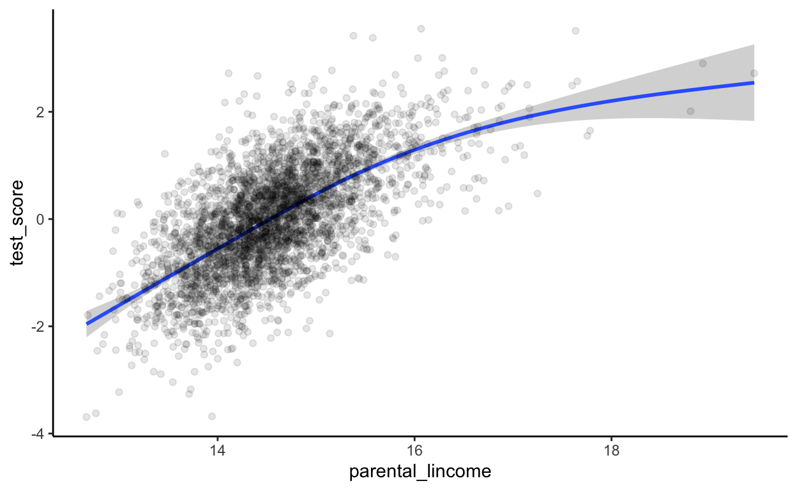
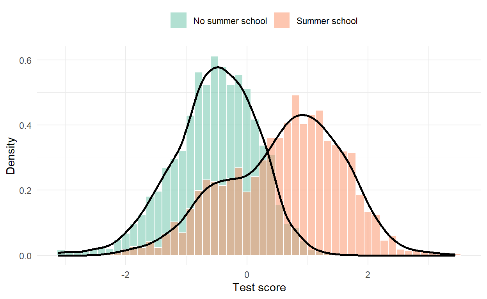
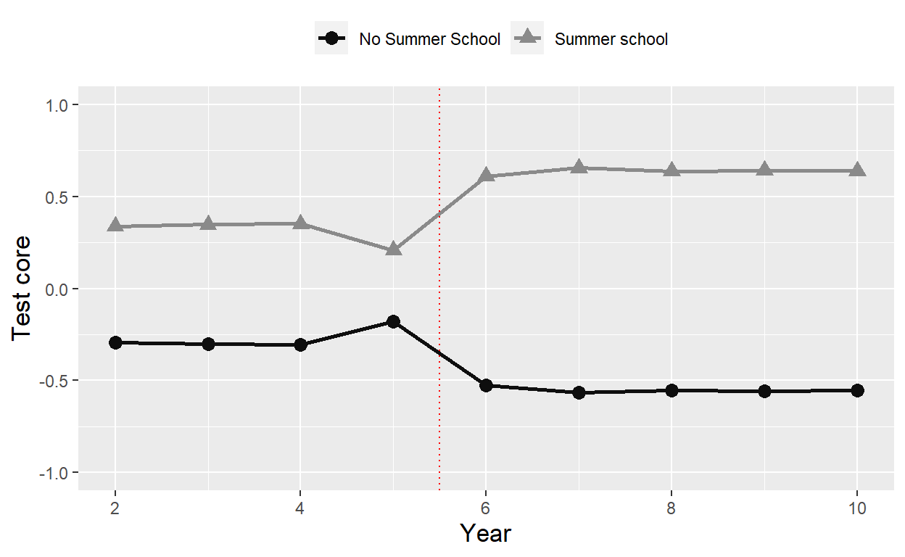

Welcome!
Hi!
This tutorial is written for Applied Economics students at the University of Bristol.
How this works
- The tutorial is structured as a complete research project starting with loading the raw data and ending with a chart comparing the estimates across approaches.
- All data used is directly downloadable. You should therefore be able to download the data and try the methods in R on your own computer.
- The tutorial mainly consists of code blocks and the resulting output. Every now and then I include some references to how I would do the same task in Stata or key differences to Stata.
I appreciate feedback, thanks.
Hans (version 0.3 - November 30 , 2020)
1 Research question & data
1.1 The research question
Our goal is to answer the following fictitious research question:
Does attending a summer school improve test scores?
The research question will be addressed using a fictitious simulated dataset.
1.2 The fictitious setting
The research question is inspired by papers such as Matsudaira (2007) and the survey on interventions for low SES students by by Dietrichson et al ( 2017).
The fictitious setting is as follows:
- In the summer break between year 5 and year 6, (roughly corresponding to age 10) there is an optional summer school.
- The summer school could be focusing on the school curriculum, or it could be focused on skills that lead to improved schooling outcomes (for example “grit” as in Alan et al (2019)).
- The summer school is free, but enrollment requires active involvement by parents.
- We are interested in whether participation in the summer school improves child outcomes.
- The setting is a dream for researchers (there is a reason why it is fictitious!):
1.3 The fictitious data
We have three datasets to study the research question:
- We use this as example on how to load data stored in a csv format.
- This dataset contains information about person id, school id, an indicator variable that takes the value of 1 if the individual participated in the summer school, information about gender, parental income and parental schooling, and test scores in year 5 (before the treatment) and year 6.
- We use this as example on how to load data stored in a Stata format.
- This dataset contains information about person id, which enables us to link it to the first dataset. We will use this to practice merging data.
- The dataset also contains information about whether the individual received a reminder letter.
- We use this as example on how to load data stored in a Microsoft Excel format.
- This dataset contains information about person id, which enables us to link it to the first dataset.
- The dataset also contains information about test scores in earlier (<5) and later years (>6).
Let’s get started!
2 Loading & merging the data
2.1 Installing and loading a “package”
The first item on our to do list is to load the datasets. The first dataset is in a csv format. There are several ways to load a csv document into R. I am going to use read_csv() from the readr package. Before we can use this package we need to install it. We install a package with the install.packages() function, where we insert the name of the package in parenthesis. This procedure corresponds to ssc install outreg to install outreg in Stata.
An important difference to Stata is that we also have to tell R to use the new package in every new session. We do that with library(). However we only have to install it once. So to install and load readr we run the following command:
install.packages("readr")To load the readr package we run the following command:
library("readr")While we only have to install a package once on each computer, we have load it in every new session.
2.2 Loading a csv data file
Having installed readr we are now ready to use the read_csv() function to load our first dataset. We will load the dataset school_data_1.csv by inserting the path to the file in the parenthesis. In the example below we first load the readr package to illustrate that we have to load it in every new session. However, in later code blocks we’ll leave out the library() call for packages that have already been loaded.
PS. note also that we include comments in code block below. Comments are lines that R ignores and these lines always start with a # symbol.
# load readr package
library("readr")
# load data
read_csv("C:/Users/hhs/school_data_1.csv")Stata users would now expect that the dataset is loaded in the memory and everything I do now relates to this dataset. Stata users will be disappointed. When R executes the command above it loads the data, but then it says: “Hey, Hans didn’t tell me what to do with the dataset, so I will just print the contents of it and forget it.”
While Stata (at least in older versions) is based on having one dataset loaded at a time, we can have many datasets loaded at once in R. Therefore, to identify the dataset we need to give it a name. In this example we tell R to store the new dataset under the name school_data_1 we use the assignment operator <-, but = would also work. However, it is a good habit to use the assignment operator, because it makes life a bit easier in more advanced situations that will meet later on your R journey (not in this tutorial).
# load data and assign it to an object with the name school_data_1
school_data_1<-read_csv("C:/Users/hhs/school_data_1.csv")In Stata my first step after loading the data is typically to use browse to take a look at the data. In R we can do that with View(school_data_1). I will not show that command here. Instead I will present the function head() that prints the head of the dataset with the first 6 rows.
# Use head() to print first 6 observations of school_data_1
head(school_data_1)2.3 Loading a Stata data file
We will now load a Stata dataset into R. To load a dta file I will use the read.dta13() function from the readstata13 package. The syntax is then very similar to the read_csv() syntax. This time we will use tail() to show the last 8 observations.
# load readstata13
library("readstata13")
# use read.dta13 from readstata13 to load a Stata dataset
school_data_2<- read.dta13("C:/Users/hhs/school_data_2.dta")
# print the 8 rows in the tail
tail(school_data_2,n=8)2.4 Loading an xlsx file
Finally, we’ll load the the xlsx file school_data_3.xlsx for that we’ll use the read.xlsx() function from the openxlsx package. Again, the syntax is very similar to what we’ve seen before. This time we will use the glimpse() function from the dplyr package to get a glimpse of the dataset.
# Load openxlsx and dplyr
library("openxlsx")
library("dplyr")
# Use read.xlsx from openxlsx to load .xlsx file
school_data_3 <- read.xlsx("C:/Users/hhs/school_data_3.xlsx")
# use glimpse to get a "glimpse" of the loaded dataset
glimpse(school_data_3)## Rows: 3,491
## Columns: 10
## $ person_id <int> 1, 2, 3, 4, 5, 6, 7, 8, 9, 10, 11, 12, 13, 14, 15, 16, 17…
## $ test_year_2 <dbl> 1.090117, 1.246309, 2.726472, 2.693032, 1.660545, 2.22377…
## $ test_year_3 <dbl> 1.914594, 1.154470, 2.269011, 2.413203, 1.828067, 2.27566…
## $ test_year_4 <dbl> 2.065805, 1.582455, 3.247252, 1.479452, 1.361972, 2.38510…
## $ test_year_7 <dbl> 2.377697, 1.747376, 3.017764, 2.637954, 1.904636, 3.37613…
## $ test_year_8 <dbl> 2.032904, 2.444041, 3.361646, 3.021940, 2.109774, 3.24542…
## $ test_year_9 <dbl> 1.493803, 1.663050, 3.387020, 2.761513, 2.285818, 2.96503…
## $ test_year_10 <dbl> 1.880512, 1.833769, 2.968617, 2.088086, 1.845694, 3.30819…
## $ learnings <dbl> 10.236394, 8.278911, 8.966529, 8.876466, 8.770518, 10.484…
## $ school_id <int> 5, 14, 7, 8, 9, 26, 13, 11, 23, 9, 25, 15, 3, 4, 17, 7, 1…2.5 Merging the datasets
Let’s now load the three datasets. We will use the merge() function for that. In merge we first state the names of the two datasets to merge. We then tell R the column(s) to use to merge the two datasets with by=..... As a default R includes all rows that are observed in both datasets (based on the by variable), but we can set all=TRUE to keep all rows from both datasets, or all.x=TRUE to keep all rows from the first dataset and all rows that were merged, and finally all.y=TRUE to keep all rows from the second dataset. The default behaviour of R corresponds to using the option keep(3) in Stata, and Stata’s default option corresponds to using all=TRUE in R.
Here as example where merge the first two datasets. We then use the dim() function to get the dimensions of the new merged dataset in terms of the number of rows and the number of columns.
# merge school_data_1 with school_data_2
school_data_merged<-merge(school_data_1,school_data_2,by="person_id")
dim(school_data_merged)## [1] 3491 9We note that the merged dataset has 3491 rows and 9 columns. We actually didn’t check the number of rows in the raw datasets (that would be a good thing to do), but if we managed to merge all observations, it should be 3491. From above we knew that school_data_1 has 8 columns and by merging the school_data_2 on we also get the column with the information about whether the family receiving the letter, making it to in total 9 columns.
Important difference to Stata: A key difference between Stata and R merge is that in case a variable in the first dataset has the same name as a column in the second dataset, R will automatically rename the column names by adding suffices .x (the column from the first dataset) and .y (the column from the second dataset). Stata just overwrites the columns.
Now it is your turn, in the block below we want o
- Merge school_data_1 and school_data_2 by the person_id column and save the merged dataset under the name school_data.
- Merge school_data_3 with school_data and overwrite school_data. Note in this case we merge by person_id and school_id columns. This is not necessary (because person_id is unique), but serves as an example on how to merge by more columns using
c(). name school_data. - Use the
summary()function to obtain summary statistics of the variables.
# Merge school_data_1 and school_data_2 and save as school_data_merged
# Merge school_data_3 with school_data_merged
# summary statistics# Merge school_data_1 and school_data_2 and save as school_data_merged
school_data_merged<-merge(school_data_1,school_data_2,by="person_id")# Merge school_data_1 and school_data_2 and save as school_data_merged
school_data_merged<-merge(school_data_1,school_data_2,by="person_id")
# Merge school_data_3 with school_data_merged
school_data_merged<-merge(school_data_merged,school_data_3,by=c("person_id","school_id"))# Merge school_data_1 and school_data_2 and save as school_data_merged
school_data_merged<-merge(school_data_1,school_data_2,by="person_id")
# Merge school_data_3 with school_data_merged
school_data_merged<-merge(school_data_merged,school_data_3,by=c("person_id","school_id"))
# summary statistics
summary(school_data_merged)3 Cleaning the data
3.1 Tidying the data
Now that we have merged the datasets we want to make sure that the merged dataset satisfies the Tidy Data Principles. From these principles we know that the number of columns should correspond to the number of variables in the dataset. But how many variables are there?
Let’s now compare the number of variables to the number of columns:
# Use the dim() functions to get the number of rows and columns# Use the dim() functions to get the number of rows and columns
dim(school_data_merged)# Alternatively we can use the nrow() functions to get the number of columns
ncol(school_data_merged)Oh no, the number of columns does not correspond to the number of variables. Let’s sort this out. The issue is that the variables test_year_5 contain information about the test score and the year. We need to separate this out. Wwe can use tools from the tidyr package to make the dataset tidy. Specifically, we use pivot_longer() which corresponds to reshape long in Stata. See also section 9.2 in my R introduction for details.
# load tidyr package
library("tidyr")
# make data tidy (make long)
school_data_tidy<-school_data_merged%>%
pivot_longer(
cols = starts_with("test_year"),
names_to = "year",
names_prefix = "test_year_",
names_transform = list(year = as.integer),
values_to = "test_score",
)
# ncol to get the number of columns of the new dataset
ncol(school_data_merged)## [1] 9Hurray! We now have that the number columns correspond to the number of variables.
3.2 Sample Selection
We now have a dataset that satisfies the tidy data principles. The next task before is the sample selection. The only sample selection we are concerned with in this exercise is missing values. We will use the skim() function to assess how many missing values there are in our dataset. skim() is one of my favourite functions in R to get an overview of the datasets, it comes from the skimr package.
# Load skimr
library("skimr")
# Use skim() to skim the data
skim(school_data_tidy)| Name | school_data_tidy |
| Number of rows | 31419 |
| Number of columns | 10 |
| _______________________ | |
| Column type frequency: | |
| numeric | 10 |
| ________________________ | |
| Group variables | None |
Variable type: numeric
| skim_variable | n_missing | complete_rate | mean | sd | p0 | p25 | p50 | p75 | p100 | hist |
|---|---|---|---|---|---|---|---|---|---|---|
| person_id | 0 | 1 | 1746.00 | 1007.78 | 1.00 | 873.00 | 1746.00 | 2619.00 | 3491.00 | ▇▇▇▇▇ |
| school_id | 0 | 1 | 15.66 | 8.67 | 1.00 | 8.00 | 15.00 | 23.00 | 30.00 | ▇▇▇▇▇ |
| summercamp | 0 | 1 | 0.46 | 0.50 | 0.00 | 0.00 | 0.00 | 1.00 | 1.00 | ▇▁▁▁▇ |
| female | 0 | 1 | 0.52 | 0.50 | 0.00 | 0.00 | 1.00 | 1.00 | 1.00 | ▇▁▁▁▇ |
| parental_schooling | 45 | 1 | 11.32 | 1.10 | 10.00 | 11.00 | 11.00 | 12.00 | 23.00 | ▇▁▁▁▁ |
| parental_lincome | 0 | 1 | 14.56 | 0.69 | 12.67 | 14.11 | 14.52 | 14.95 | 19.45 | ▂▇▁▁▁ |
| letter | 0 | 1 | 0.25 | 0.43 | 0.00 | 0.00 | 0.00 | 0.00 | 1.00 | ▇▁▁▁▂ |
| learnings | 0 | 1 | 10.06 | 1.28 | 5.39 | 9.18 | 10.04 | 10.96 | 14.62 | ▁▃▇▃▁ |
| year | 0 | 1 | 6.00 | 2.58 | 2.00 | 4.00 | 6.00 | 8.00 | 10.00 | ▇▇▃▇▇ |
| test_score | 11 | 1 | 2.36 | 0.72 | -0.57 | 1.87 | 2.32 | 2.83 | 5.05 | ▁▂▇▃▁ |
We can see how many observations and variables there are, the variable types, the number of missing values. The mean, standard deviations, percentiles, and we even get a small histogram.
We notice that the variable parental_schooling has 45 missing values and the variable test score has 11 missing values. Let’s assume that these values are missing at random and remove these rows. Here we use filter() for that.
# Select only rows with no missing values
school_data_selected<-school_data_tidy%>%
filter(!is.na(parental_schooling),!is.na(test_score))
# Use apply to apply a function on all columns
apply(school_data_selected,2, function(x) sum(is.na(x)))## person_id school_id summercamp female
## 0 0 0 0
## parental_schooling parental_lincome letter learnings
## 0 0 0 0
## year test_score
## 0 0There are many ways to assess the how many rows with missing values there are in our dataset, but in the example above I introduced the very popular apply() family in R. The apply function applies takes three arguments: an object (like a data frame), the dimension of the object to “loop over”, the function to execute in each loop iteration. In our example we tell R to consider the school_data object, the second dimension (columns), and on each column execute the function sum(is.na(x)).
This might seem overly complicated for a Stata user (like myself), but hey! How would you do this in Stata? apply() is super useful as we can loop over objects in just one line. I called it a family, because of the siblings lapply(), sapply(), tapply(), and more. See http://uc-r.github.io/apply_family for details.
Very good! We’ve now created a new dataset containing only complete cases. Let’s now create a nice looking tab
3.3 Modifying the data
Our next step is to make some modifications to the data. First, we will rename the summercamp variable to summerschool. We do that with the rename() function (suprise!).
# rename summercamp to summerschool
analysisdata<-rename(school_data_selected, summerschool=summercamp)
# use head to view the first 6 observations
head(analysisdata)Brilliant. In the next step we want to transform our test_score variable to have mean of zero and a standard deviation of one. Importantly we want to do this standardization within year. In Stata this would be a task for bys year:. In Stata we first specify what variable to group the data on, and the apply the functions sd and mean on that level.
Help me Hans!
I could have written the code block below as
# Group analysisdata by year analysisdata<-group_by(analysisdata,year) # Rename test_score to test_score_raw analysisdata<-rename(analysisdata,test_score_raw=test_score) # Create a new variable with mutate analysisdata<-mutate(analysisdata, test_score=(test_score_raw-mean(test_score_raw))/sd(test_score_raw))
The functions such as mutate(), select() (not used here), filter() (not used here), rename(), and group_by() all take the dataset as the first argument. In the block above I overwrite analysisdata in every line with the modified dataset. In the block below I use the %>% (called the pipe operator) instead. It basically just moves the resulting dataset forward to the next dataset.
# Standardize test score
analysisdata<-analysisdata%>%
group_by(year)%>%
rename(test_score_raw=test_score)%>%
mutate(test_score=(test_score_raw-mean(test_score_raw))/sd(test_score_raw))
# show mean of test_score
print(paste("Mean of test score:",mean(analysisdata$test_score)))## [1] "Mean of test score: -7.87202059464047e-17"#show sd of test_score
print(paste("SD of test score:",sd(analysisdata$test_score)))## [1] "SD of test score: 0.999872448979073"In the example above we use
print()to print output to the console (just like display in Stata).paste()to concatenate elements togetheranalysisdata$test_scoreto extract the variable test_score from the analysisdata dataset.mean()andsd()to calculate means and standard deviations. Note that this only works because we already removed the missing values. If we applymean()on a vector that includes missing values it will return a missing value unless we specify the optionna.rm = FALSE.
4 Descriptive Statistics
We’ve now managed to load csv, dta, and xlsx files. We’ve also managed to merge them, restructure the dataset so that it follows the Tidy Data Principles, and we have removed missing values. The next step in our empirical project is to create some tables and charts to describe the dataset. From now on we’ll assume that the dataset is loaded.
Our goal is to create a table that shows means, standard deviations, and other statistics that gives us and the reader an impression of the dataset. We already know at least two ways to calculate summary statistics:
summary()from base R. This function actually works on a lot of object types in R. It always gives a good summary. But our goal is to create a table that we can include in a Microsoft Word or Latex document.skim()from the skimr package.
4.1 A quick way to create a nice looking table
We will first use a cousin of skim() to create a table with summary statistics that can be exported to various formats, included Latex. The cousin comes from the modelsummary package and is called datasummary_skim(). Let’s first create the default table:
# load modelsummary
library("modelsummary")
# create a summary stat table
analysisdata%>%
filter(year==2)%>%
select(female,starts_with("paren"),letter,summerschool,test_score)%>%
datasummary_skim()| Unique (#) | Missing (%) | Mean | SD | Min | Median | Max | ||
|---|---|---|---|---|---|---|---|---|
| year | 1 | 0 | 2.0 | 0.0 | 2.0 | 2.0 | 2.0 | |
| female | 2 | 0 | 0.5 | 0.5 | 0.0 | 1.0 | 1.0 | |
| parental_schooling | 12 | 0 | 11.3 | 1.1 | 10.0 | 11.0 | 23.0 | |
| parental_lincome | 3486 | 0 | 14.6 | 0.7 | 12.7 | 14.5 | 19.4 | |
| letter | 2 | 0 | 0.2 | 0.4 | 0.0 | 0.0 | 1.0 | |
| summerschool | 2 | 0 | 0.5 | 0.5 | 0.0 | 0.0 | 1.0 | |
| test_score | 3486 | 0 | −0.0 | 1.0 | −4.1 | 0.0 | 3.7 |
Let’s now change the appearance of the table and export it to Latex. When exporting it to Latex, we can’t have histogram’, so we disable them. We specify output="tab_summary_statistics.tex" to write to a latex file. We can also export the table to other formats like a Microsoft Word document.
# load modelsummary
library("modelsummary")
# create a summary stat table in Latex format
analysisdata%>%
filter(year==2)%>%
select(female,starts_with("paren"),letter,summerschool,test_score)%>%
datasummary_skim( fmt="%.2f",
histogram=FALSE, output="tab_summary_statistics.tex")The tab_summary_statistics.tex output looks as follows and is ready to be included in Latex:
\begin{table}[H]
\centering
\begin{tabular}[t]{lrrrrrrr}
\toprule
& Unique (\#) & Missing (\%) & Mean & SD & Min & Median & Max\\
\midrule
female & 2 & 0 & 0.52 & 0.50 & 0.00 & 1.00 & 1.00\\
parental\_schooling & 12 & 0 & 11.32 & 1.10 & 10.00 & 11.00 & 23.00\\
parental\_lincome & 3486 & 0 & 14.56 & 0.69 & 12.67 & 14.52 & 19.45\\
letter & 2 & 0 & 0.25 & 0.43 & 0.00 & 0.00 & 1.00\\
test\_score & 3486 & 0 & 2.22 & 0.68 & -0.57 & 2.24 & 4.74\\
\bottomrule
\end{tabular}
\end{table}
Brilliant. But what if we want a table for Microsoft Word? We simply write output="tab_summary_statistics.docx" instead.
4.2 Custom tables
To customize our table of summary statistics a bit more we can use the function datasummary(). This function allows us to enter a formula expressing the layout of our table. Let’s try it:
# load modelsummary
library("modelsummary")
# create a summary stat table
datasummary(female+parental_schooling+parental_lincome+
letter+test_score~Factor(summerschool)*(Mean+SD),
sparse_header = FALSE,
data=filter(analysisdata,year==2))| Mean | SD | Mean | SD | |
|---|---|---|---|---|
| female | 0.51 | 0.50 | 0.53 | 0.50 |
| parental_schooling | 11.03 | 0.74 | 11.67 | 1.33 |
| parental_lincome | 14.35 | 0.52 | 14.81 | 0.79 |
| letter | 0.09 | 0.29 | 0.43 | 0.49 |
| test_score | −0.29 | 0.85 | 0.34 | 1.05 |
In the example above we
List the variables to include separated with a +:
female+parental_schooling+pa...Use a
~to separate the list of variables from the formula.Use the formula
Factor(summerschool)*(Mean+SD)to show that we want to show the mean and standard deviation separately for each values of the variablesummerschool. We useFactor()to tell R that it should consider summerschool as a binary variable. We could also have done that in the data tidying process. We can also reverse the ordering(Mean+SD)*Factor(summerschool), which would then first show the mean and standard deviation and then split by summerschool within these values.Use
sparse_header = FALSEto specify that we actually want to include the “summerschool” as a header.
4.3 Variable names in tables
So far we’ve used variable names as labels in our table. In contrast to Stata, R allows for labels with white space, and we could therefore rename the variables to give nicer looking names in our table. However, we can also just assign a “label” when creating the table as shown below:
# load modelsummary
library("modelsummary")
# create a summary stat table
datasummary((`Female`=female)+
(`Parental schooling (years)`=parental_schooling)+
(`Parental income (log)`=parental_lincome)+
(`Received reminder letter`=letter)+
(`Test Score`=test_score)~
(`Attended summer school`=Factor(summerschool))*
(Mean+SD),
sparse_header = FALSE,
data=filter(analysisdata,year==2))| Mean | SD | Mean | SD | |
|---|---|---|---|---|
| Female | 0.51 | 0.50 | 0.53 | 0.50 |
| Parental schooling (years) | 11.03 | 0.74 | 11.67 | 1.33 |
| Parental income (log) | 14.35 | 0.52 | 14.81 | 0.79 |
| Received reminder letter | 0.09 | 0.29 | 0.43 | 0.49 |
| Test Score | −0.29 | 0.85 | 0.34 | 1.05 |
4.4 Outputing to Microsoft Word or Latex
To save our datasummary() table to Microsoft Word or Latex, we use the same expression as with datasummary_skim(), as illustrated below:
# load modelsummary
library("modelsummary")
#library("flextable")
# create a summary stat table
datasummary((`Female`=female)+
(`Parental schooling (years)`=parental_schooling)+
(`Parental income (log)`=parental_lincome)+
(`Received reminder letter`=letter)+
(`Test Score`=test_score)~
(Mean+SD+P25+P50+P75),
sparse_header = FALSE,
data=filter(analysisdata,year==2),
output = 'tab_descriptive_statistics.docx')4.4 Tables with Stargazer
Before I met the datasummary package in R I created my Latex tables with stargazer() from the stargazer package. This function is super easy to use. Let us try it! To create a table of summary statistics we simply provide stargazer() with a data frame. The only challenge now is that so far we have worked with so called tibble and not data frames. We therefore first have to convert it into a data frame which we do with as.data.frame() as shown below.
# load stargazer
library("stargazer")
# prepare data for stargazer
data_for_stargazer<-analysisdata%>%
select(female,parental_schooling,parental_lincome,letter,test_score)%>%
filter(year==2)%>%
as.data.frame()
# create a summary stat table
stargazer(data_for_stargazer,type="html")| Statistic | N | Mean | St. Dev. | Min | Pctl(25) | Pctl(75) | Max |
| year | 3,486 | 2.000 | 0.000 | 2 | 2 | 2 | 2 |
| female | 3,486 | 0.515 | 0.500 | 0 | 0 | 1 | 1 |
| parental_schooling | 3,486 | 11.325 | 1.105 | 10 | 11 | 12 | 23 |
| parental_lincome | 3,486 | 14.563 | 0.694 | 12.668 | 14.114 | 14.947 | 19.450 |
| letter | 3,486 | 0.247 | 0.431 | 0 | 0 | 0 | 1 |
| test_score | 3,486 | -0.000 | 1.000 | -4.130 | -0.670 | 0.650 | 3.714 |
For more details about Stargazer check the documentation here.
5 Descriptive charts
The ggplot world is covered in R introduction, but let us briefly cover a few charts here as well. You will also see more charts in later chapters.
5.1 A scatter plot
Our first chart is a scatter plot. We are just interested in whether test score is and parental income are correlated. We therefore create a scatter plot test scores in year 5 against parental income. We add a fitted line as well.
In the following example we
- Initiate a
ggplot()object usign the analysisdata filtered to only include year 5. - Specify that parental_lincome should be used on the x-axis and test_score on the y-axis in
aes()insideggplot(). - Use
geom_smooth()to include a fitted line. - Use
geom_point()to add the scatter plot and setalpha=0.1to make it almost transparent. - Use
theme_classic()to apply the classic theme.
# load ggplot2
library("ggplot2")
# create a scatter plot with a fitted line
ggplot(analysisdata%>%filter(year==5),
aes(x=parental_lincome,y=test_score))+
geom_smooth() +
geom_point(alpha=0.1)+
theme_classic()
5.2 Bar chart and boxplot
Okay, we observe that test score is correlated with parental income. That is not surprising. Now let’s also create charts to assess whether summer school attendance is correlated with individual characteristics. We first create a scatter plot of parental schooling and test scores in year 5 (before the summer school). This is just like above, but with schooling instead of income. Secondly, we create a bar chart showing average test score in year 5 (before the summer school) by summer school attendance. Thirdly, we create box plots of parental income by summer school attendance. There are a few additional tricks in the following code:
- We first create the basic
ggplot()object where we load the data and specify the theme. This object is called rawchart - We then create 3 charts based on rawchart. Each chart is saved under a name.
- We use
geom_bar()to create a bar chart. We setstat="summary",fun="mean"to tell R to create a bar chart showing the mean of test_score. - We use
labs()to specify the axes titles. - We use
geom_boxplot()to create a box plot. - We use the patchwork package to combine several charts in one chart.
- Use
ggsave()to save the chart to a png file.
# Load patchwork
library("patchwork")
# Create raw chart element
rawchart<-ggplot(analysisdata%>%filter(year==4),x=as.factor(fill))+
theme_classic()
# Create bar chart of pre summer school test score and summer school
p1<-rawchart+
geom_smooth(aes(x=parental_schooling,y=test_score)) +
geom_point(aes(x=parental_schooling,y=test_score),alpha=0.1)+
labs(x="Parental schooling", y="Test Score Year 5")
# Create bar chart of pre summer school test score and summer school
p2<-rawchart+
geom_bar(aes(x=as.factor(summerschool),y=test_score),
stat="summary",fun="mean")+
labs(y="Test Score Year 5", x="Attended Summer School")
# Create bar chart of parental schooling and summer school attendance
p3<-rawchart+
geom_boxplot(aes(x=as.factor(summerschool),y=parental_lincome))+
labs(y="Parental Income (log)", x="Attended Summer School")
# Combine charts
p1/(p2+p3)
# Export chart
ggsave("fig1.png")
The three charts above show us that test scores are correlated with parental background (the scatter plot), that those who attended the summer school had better test scores before the summer school, and that parental account is correlated with summer school attendance (the box plot). In short:

5.3 Histogram & density charts
Let’s compare the test score distribution in year 6 (after the summer school) for those who attended the summer school with those who did not. We create a histogram and add a line showing the estimated density distributions. We also change the colour scheme, the legend labels, the legend poistion, and a few minor tweaks.
# create a histogram and density chart
ggplot(analysisdata%>%filter(year==6),
aes(x=test_score,fill=as.factor(summerschool)))+
geom_histogram(aes(y=..density..),bins = 50,alpha=0.5,
position="identity",color="white")+
geom_density(alpha=0.0,size=1,show_guide= FALSE)+
theme_minimal()+
labs(y="Density",x="Test score",fill=" ")+
scale_fill_brewer(palette="Set2",labels=c("No summer school","Summer school"))+
theme(legend.position="top")
5.4 The Joy Division Album Cover chart

The next chart is inspired by a Joy Division album cover unknown pleasures (read more here). We use geom_density_ridges() from the ggridges package.
Our goal is to compare the test score distribution for those who received the summer school reminder letter with those who did not. We are already making a step into the next chapter and assessing at the Randomized Control Trial in two dimensions. First, the test score comparisons before year 6 are informative about whether the randomization worked. Secondly, the test score comparisons from year 6 and later are informative about the reduced form effect.
# Load ggridges
library("ggridges")
# create a ggridges chart
ggplot(analysisdata,aes(y=as.factor(year),x=test_score,fill=as.factor(letter) ))+
geom_density_ridges( alpha = .7, scale=1.5,color = "white", from = -2.5, to = 2.5)+
theme_minimal()+
theme_ridges(grid = FALSE)+
scale_y_discrete(expand = c(0, 0)) +
coord_flip()+
scale_x_continuous(expand = c(0, 0)) +
scale_fill_brewer(palette="Set1",labels=c("No letter","Letter"))+
labs(x="Test Score",y="Year",fill=" ",
title="Test score distribution by reminder letter status & year")+
theme(legend.position="top",aspect.ratio=4/3,plot.title = element_text(hjust = 0.5))
The chart above tells a convincing story. In the first five years the distribution of test scores is essentially identical across those who received and those who did not receive a reminder letter. That indicates that the randomisation worked as intended. After year 5 the test score distribution of those who received a reminder letter shifted to the right compared to those who did not receive a letter suggesting a reduced form effect of the letter on our outcome. Let’s analyse that in the next sections.
6 Balancing tables
The last chart suggested that the letter that was randomly sent to some families to remind them about the summer school worked. The test score distribution of the children that received the letter shifted to the right. Importantly, the charts also suggested that there was no difference prior to the summer school. Let us now test that formally.
6.1 Pairwise t-test
We can conduct a t-test in R using t.test(). Specifically, we specify the formula test_score~summerschool to test whether the average test_score is significantly different across the two groups specified by summerschool. Let’s do that for year 5 data:
# Filter year 5
df<-analysisdata%>%filter(year==5)
# Conduct a t test
t.test(test_score~letter,data=df)##
## Welch Two Sample t-test
##
## data: test_score by letter
## t = 0.65949, df = 1466.6, p-value = 0.5097
## alternative hypothesis: true difference in means between group 0 and group 1 is not equal to 0
## 95 percent confidence interval:
## -0.05115001 0.10296341
## sample estimates:
## mean in group 0 mean in group 1
## 0.006409674 -0.019497022The test suggest that the mean test score prior to summer school was not difference across letter receivers and not receivers. Promising!
One feature of R that I really appreciate (especially compared to Stata) is that I can skip steps and directly insert functions within other functions. For example if I know that I am not going to use the selected dataset again, we don’t need to create it first. We can simply specify the selection criteria in the data argument of t.test() as shown below (we also did that in the charts above)
# Conduct a t test on analysisdata restricted to year 4
t.test(test_score~letter,data=analysisdata%>%filter(year==4))##
## Welch Two Sample t-test
##
## data: test_score by letter
## t = -0.85058, df = 1488.6, p-value = 0.3951
## alternative hypothesis: true difference in means between group 0 and group 1 is not equal to 0
## 95 percent confidence interval:
## -0.10948596 0.04325425
## sample estimates:
## mean in group 0 mean in group 1
## -0.008188716 0.0249271376.2 A publication ready table of mean comparisons
If we want to create a nice looking balancing table and insert it in Latex or Word, we can use datasummary_balance() from the modelsummary package. We load the estimatr package because it enables datasummary_balance() to calculate and include the pairwise t-tests.
# t test
library(modelsummary)
library(estimatr)
# Filter and modify data
testdata<-analysisdata%>%
filter(year==5)%>%
ungroup()%>%
mutate(Treated=ifelse(letter==1,"Letter","No Letter"))%>%
select(female,parental_schooling,parental_lincome,test_score,Treated)%>%
rename(`Female`=female,
`Parental schooling (years)`=parental_schooling,
`Parental income (log)`=parental_lincome,
`Test Score`=test_score)
# Table with balancing test
datasummary_balance(~Treated,
data = testdata,
title = "Balance of pre-treatment variables",
notes = "Notes: This is a brilliant table!",
fmt= '%.5f',
dinm_statistic = "p.value")| Mean | Std. Dev. | Mean | Std. Dev. | Diff. in Means | p | |
|---|---|---|---|---|---|---|
| Female | 0.52033 | 0.49988 | 0.51355 | 0.49991 | −0.00677 | 0.73032 |
| Parental schooling (years) | 11.31359 | 0.97129 | 11.32952 | 1.14573 | 0.01593 | 0.69028 |
| Parental income (log) | 14.56467 | 0.66201 | 14.56289 | 0.70338 | −0.00178 | 0.94629 |
| Test Score | -0.01950 | 0.99990 | 0.00641 | 1.00014 | 0.02591 | 0.50968 |
| Notes: This is a brilliant table! |
The table suggests that all variables are well balanced across treated (receiving a letter) and untreated.
As before, we can simply add the option output=tab_balancing.docx if we want to export the table to Microsoft Word, or output=tab_balancing.tex if we want a Latex table.
7 Ordinary Least Squares
Our goal is now to estimate the following reduced form relationship between test score in year 6 and an indicator for receiving a reminder letter using Ordinary Least Squares (OLS)
\(testscore_i=\beta_0+\beta_1Letter_i+u_i\).
7.1 OLS estimation with with lm()
We can run OLS with lm() (linear models). We first enter a formula of the form:
y~x1+x2+...
followed by the
data=...command.
Below is an example based on a univariate regression between testscore and the indicator for receiving the letter.
# Ordinary Least Squares regression
lm(test_score~letter,data=analysisdata%>%filter(year==6))##
## Call:
## lm(formula = test_score ~ letter, data = analysisdata %>% filter(year ==
## 6))
##
## Coefficients:
## (Intercept) letter
## -0.05086 0.20585The output from lm() is a bit disappointing. But fear not. We can use the universal summary() function to get a bit more information out of lm():
# Summary of Ordinary Least Squares regression
summary(lm(test_score~letter,data=analysisdata%>%filter(year==6)))##
## Call:
## lm(formula = test_score ~ letter, data = analysisdata %>% filter(year ==
## 6))
##
## Residuals:
## Min 1Q Median 3Q Max
## -3.2378 -0.6954 -0.0716 0.6650 3.4737
##
## Coefficients:
## Estimate Std. Error t value Pr(>|t|)
## (Intercept) -0.05086 0.01946 -2.614 0.009 **
## letter 0.20585 0.03915 5.258 1.54e-07 ***
## ---
## Signif. codes: 0 '***' 0.001 '**' 0.01 '*' 0.05 '.' 0.1 ' ' 1
##
## Residual standard error: 0.9962 on 3479 degrees of freedom
## Multiple R-squared: 0.007884, Adjusted R-squared: 0.007599
## F-statistic: 27.65 on 1 and 3479 DF, p-value: 1.543e-07A nice feature of R is that we can assign basically everything to a name and then use it later. In the code block below we first run a regression and store it under the name model1. We then later call these regression results back when using the summary() command. In the following example we include a few covariates in the regression:
# Ordinary Least Squares regression
model1<-lm(test_score~parental_schooling+parental_lincome+letter+female,data=analysisdata%>%filter(year==6))
# Summary of model1
summary(model1)##
## Call:
## lm(formula = test_score ~ parental_schooling + parental_lincome +
## letter + female, data = analysisdata %>% filter(year == 6))
##
## Residuals:
## Min 1Q Median 3Q Max
## -2.44279 -0.50854 0.00346 0.48833 2.82276
##
## Coefficients:
## Estimate Std. Error t value Pr(>|t|)
## (Intercept) -14.55959 0.29291 -49.706 < 2e-16 ***
## parental_schooling -0.02789 0.01876 -1.487 0.137
## parental_lincome 1.01848 0.02988 34.086 < 2e-16 ***
## letter 0.20557 0.02854 7.204 7.14e-13 ***
## female -0.01425 0.02464 -0.578 0.563
## ---
## Signif. codes: 0 '***' 0.001 '**' 0.01 '*' 0.05 '.' 0.1 ' ' 1
##
## Residual standard error: 0.7261 on 3476 degrees of freedom
## Multiple R-squared: 0.4734, Adjusted R-squared: 0.4728
## F-statistic: 781.2 on 4 and 3476 DF, p-value: < 2.2e-167.2 OLS with the felm() function
I am a big fan of running regressions with reghdfe if in Stata. Luckily R has something quite similar. That is felm() from the lfe package. This function expects a formula of the form:
y~x1+x2+..|fixed effects|IV specification|cluster variables
If we don’t have fixed effects, an IV specification, or cluster variables, we simply insert a 0. See (The FELM documentation for extensive explanations)[https://www.rdocumentation.org/packages/lfe/versions/2.8-5.1/topics/felm].
In the following example we run a linear regression without fixed effects, but standard errors clustered on the school level. We specify cmethod="reghdfe" to mimic the clustering approach of reghdfe.
# Load packages
library(lfe)
# Select data
regdata<-analysisdata%>%filter(year==6)
# Regression
m1<-felm(test_score~letter+parental_lincome+female+parental_schooling|0|0|school_id
,data=regdata, cmethod="reghdfe")
# Summary of regression
summary(m1)##
## Call:
## felm(formula = test_score ~ letter + parental_lincome + female + parental_schooling | 0 | 0 | school_id, data = regdata, cmethod = "reghdfe")
##
## Residuals:
## Min 1Q Median 3Q Max
## -2.44279 -0.50854 0.00346 0.48833 2.82276
##
## Coefficients:
## Estimate Cluster s.e. t value Pr(>|t|)
## (Intercept) -14.55959 0.33439 -43.541 < 2e-16 ***
## letter 0.20557 0.02714 7.574 2.38e-08 ***
## parental_lincome 1.01848 0.03565 28.565 < 2e-16 ***
## female -0.01425 0.02077 -0.686 0.498
## parental_schooling -0.02789 0.02233 -1.249 0.222
## ---
## Signif. codes: 0 '***' 0.001 '**' 0.01 '*' 0.05 '.' 0.1 ' ' 1
##
## Residual standard error: 0.7261 on 3476 degrees of freedom
## Multiple R-squared(full model): 0.4734 Adjusted R-squared: 0.4728
## Multiple R-squared(proj model): 0.4734 Adjusted R-squared: 0.4728
## F-statistic(full model, *iid*):781.2 on 4 and 3476 DF, p-value: < 2.2e-16
## F-statistic(proj model): 720.8 on 4 and 29 DF, p-value: < 2.2e-16Brilliant. We let’s now try to output such regressions to a nice looking table. We use the modelsummary() function from modelsummary for that. In the following example we
Run two regressions and store them as models.
Use
modelsummary()to output the results of the regression results stored in models.Specify that
modelsummary()excludes the coefficient on the intercept.Specify that parentheses should include standard errors with
statistic='std.error'.Specify the formatting of the numbers with
fmt=...Use flextable to format the layout (lines etc)
# Load flextable and modelsummary
library(flextable)
library(modelsummary)
# Regressions
models<-list(
m1<-felm(test_score ~letter+parental_schooling+parental_lincome+female|0|0|school_id
,data=regdata, cmethod="reghdfe"),
m2<-felm(test_score ~letter+parental_schooling+parental_lincome+female|
school_id+year|0|school_id,data=regdata, cmethod="reghdfe")
)
# Generate table
modelsummary(models, stars = TRUE,statistic = 'std.error',
fmt= '%.4f',
coef_omit= '(Intercept)', output = 'flextable')
| Model 1 | Model 2 |
letter | 0.2056*** | 0.2102*** |
(0.0271) | (0.0279) | |
parental_schooling | -0.0279 | -0.0306 |
(0.0223) | (0.0227) | |
parental_lincome | 1.0185*** | 1.0211*** |
(0.0357) | (0.0366) | |
female | -0.0143 | -0.0096 |
(0.0208) | (0.0203) | |
Num.Obs. | 3481 | 3481 |
R2 | 0.473 | 0.479 |
R2 Adj. | 0.473 | 0.474 |
Std.Errors | by: school_id | by: school_id |
+ p < 0.1, * p < 0.05, ** p < 0.01, *** p < 0.001 | ||
Just like in earlier examples, we can output our table to Microsoft Word or Latex with output=... Note that we specify the type of standard errors in the modelsummary() function. Note that you can also use Stargazer for regression tables.
Brilliant! The results show that those received a letter have a 0.2SD higher test score in year 6. There are many other settings that we can specify to polish our table. But let us move on.
8 Logit & probit
Okay, from section 6 we conclude that the randomisation worked and that receiving the letter is as good as random. From section 7 we know that those that received a letter have a 0.2SD higher test score in year 6. But that is the intend to treat effect. Let us now scale that by the first stage effect. We are interested in the link between receiving a letter and attendign the summer school:
\[summerschool_i=g(letter_i)\]
8.1 Estimating the LPM with OLS
Let us first consider the linear probability model and estimate
\[summerschool_i=\beta1+\beta_2letter_i+\gamma'X_i+u_i\]
We already know how to do that. We can use lm() or felm(), but let us use this as a change to add a row with the mean of the dependent variable. We do that by calculating the statistics we want to add and add them to the table with add_rows=... as shown below.
# Estimate LPM (the first stage)
models<-list(
m1<-felm(summerschool ~letter+parental_schooling+parental_lincome+female|0|0|school_id
,data=regdata, cmethod="reghdfe"),
m2<-felm(summerschool ~letter+parental_schooling+parental_lincome+female|
school_id+year|0|school_id,data=regdata, cmethod="reghdfe")
)
# Store the mean of dependent variable in a data frame
added_stats<-tibble("Mean of Dep. ",m1=mean(regdata$summerschool),m2=mean(regdata$summerschool))
# Generate table
modelsummary(models, stars = TRUE,statistic = 'std.error',
fmt= '%.4f',add_rows = added_stats,
coef_omit= '(Intercept)', output = 'flextable')
| Model 1 | Model 2 |
letter | 0.4434*** | 0.4456*** |
(0.0137) | (0.0140) | |
parental_schooling | 0.0363** | 0.0356** |
(0.0118) | (0.0124) | |
parental_lincome | 0.1869*** | 0.1891*** |
(0.0227) | (0.0237) | |
female | 0.0096 | 0.0110 |
(0.0110) | (0.0112) | |
Num.Obs. | 3481 | 3481 |
R2 | 0.255 | 0.262 |
R2 Adj. | 0.254 | 0.255 |
Std.Errors | by: school_id | by: school_id |
Mean of Dep. | 0.4642 | 0.4642 |
+ p < 0.1, * p < 0.05, ** p < 0.01, *** p < 0.001 | ||
8.2 Logit & Probit
We can use glm() to estimate logit and probit models. We specify the link function as option as shown below for probit.
## Estimate a binary outcomes model using a probit
probit_results <- glm(summerschool ~letter, data = regdata, family = binomial(link="probit"))
# Print the results
summary(probit_results)##
## Call:
## glm(formula = summerschool ~ letter, family = binomial(link = "probit"),
## data = regdata)
##
## Deviance Residuals:
## Min 1Q Median 3Q Max
## -1.7877 -0.9362 -0.9362 1.4395 1.4395
##
## Coefficients:
## Estimate Std. Error z value Pr(>|z|)
## (Intercept) -0.37232 0.02511 -14.83 <2e-16 ***
## letter 1.20567 0.05470 22.04 <2e-16 ***
## ---
## Signif. codes: 0 '***' 0.001 '**' 0.01 '*' 0.05 '.' 0.1 ' ' 1
##
## (Dispersion parameter for binomial family taken to be 1)
##
## Null deviance: 4807.9 on 3480 degrees of freedom
## Residual deviance: 4275.5 on 3479 degrees of freedom
## AIC: 4279.5
##
## Number of Fisher Scoring iterations: 4and for logit (now with more controls)…
## Estimate a binary outcomes model using a logit
logit_results <- glm(summerschool ~letter+parental_lincome+female+parental_schooling, data = regdata, family = binomial(link="logit"))
# Print the results
summary(logit_results)##
## Call:
## glm(formula = summerschool ~ letter + parental_lincome + female +
## parental_schooling, family = binomial(link = "logit"), data = regdata)
##
## Deviance Residuals:
## Min 1Q Median 3Q Max
## -2.4699 -0.8627 -0.5238 0.8571 2.3472
##
## Coefficients:
## Estimate Std. Error z value Pr(>|z|)
## (Intercept) -18.13658 1.05642 -17.168 < 2e-16 ***
## letter 2.23198 0.10199 21.884 < 2e-16 ***
## parental_lincome 0.99778 0.09963 10.015 < 2e-16 ***
## female 0.05594 0.07927 0.706 0.48
## parental_schooling 0.25773 0.06556 3.931 8.45e-05 ***
## ---
## Signif. codes: 0 '***' 0.001 '**' 0.01 '*' 0.05 '.' 0.1 ' ' 1
##
## (Dispersion parameter for binomial family taken to be 1)
##
## Null deviance: 4807.9 on 3480 degrees of freedom
## Residual deviance: 3798.1 on 3476 degrees of freedom
## AIC: 3808.1
##
## Number of Fisher Scoring iterations: 4Note that the output about covers the beta coefficients. Let’s compute the average marginal effects.
8.3 Marginal effects
We can use margins() to obtain average marginal effects. We simply use the margins() function on the objects storing or probit and logit estimates. We can also include these directly in a nice looking table.
# ## Load margins package
# library("margins")
# ## Compute marginal effects
# mfx_logit<- margins(logit_results)
# mfx_probit<-margins(probit_results)
# # Include in table
# modelsummary(list(mfx_logit,mfx_probit), output = 'flextable')The results show that receiving a reminder letter increases the likelihood of summer school attendance by 40-44 percentage points. The LPM coefficient is slightly larger than the Logit and Probit average marginal effects.
9. Instrumental Variables
We estimated the reduced form relationship between receiving a reminder letter and test scores to be 0.2SD. We have also estimated the first stage to be around 0.4. We would therefore conclude that attending the summer school increases test scores by about 0.2SD/0.4=0.5SD.
Let us estimate the instrumental variable specification explicitly. I will show you two methods.
9.1 IV using the ivreg() function.
We first use the ivreg() function from the AER package. AER does not refer to the American Economic Review, but to Applied Economics with R. The syntax is as follows
ivreg(outcome equation| exogenous variables, data)
# Load the AER package
library(AER)
# Estimate IV specification with
summary(ivreg(test_score~summerschool+female+parental_lincome+parental_schooling|
female+parental_lincome+parental_schooling+letter,data=regdata))##
## Call:
## ivreg(formula = test_score ~ summerschool + female + parental_lincome +
## parental_schooling | female + parental_lincome + parental_schooling +
## letter, data = regdata)
##
## Residuals:
## Min 1Q Median 3Q Max
## -2.339871 -0.442354 0.008259 0.436036 2.565493
##
## Coefficients:
## Estimate Std. Error t value Pr(>|t|)
## (Intercept) -13.26937 0.30480 -43.535 < 2e-16 ***
## summerschool 0.46360 0.05761 8.047 1.15e-15 ***
## female -0.01872 0.02207 -0.848 0.39627
## parental_lincome 0.93185 0.02892 32.217 < 2e-16 ***
## parental_schooling -0.04473 0.01690 -2.647 0.00817 **
## ---
## Signif. codes: 0 '***' 0.001 '**' 0.01 '*' 0.05 '.' 0.1 ' ' 1
##
## Residual standard error: 0.65 on 3476 degrees of freedom
## Multiple R-Squared: 0.578, Adjusted R-squared: 0.5775
## Wald test: 974.7 on 4 and 3476 DF, p-value: < 2.2e-16The estimate is very close to the 0.5 we obtained above at 0.46SD. Note that we could be a bit skeptical about the standard errors above.
9.2 IV using the felm() function.
Let us now reuse the felm() function. Just like we can use reghdfe in Stata for IV, felm() also allows us to estimate IV specifications, as explained in section 7.2.
# Estimate IV specification with felm
m1<-felm(test_score~parental_lincome+female+parental_schooling| # Outcome eq.
school_id| # Fixed effects
(summerschool~letter)| # First stage eq.
school_id # Cluster var
,data=regdata, cmethod="reghdfe")
# Summary of results
summary(m1)##
## Call:
## felm(formula = test_score ~ parental_lincome + female + parental_schooling | school_id | (summerschool ~ letter) | school_id, data = regdata, cmethod = "reghdfe")
##
## Residuals:
## Min 1Q Median 3Q Max
## -2.30792 -0.43480 0.00585 0.43348 2.49560
##
## Coefficients:
## Estimate Cluster s.e. t value Pr(>|t|)
## parental_lincome 0.93191 0.03149 29.593 < 2e-16 ***
## female -0.01480 0.01855 -0.798 0.4314
## parental_schooling -0.04735 0.01916 -2.472 0.0196 *
## `summerschool(fit)` 0.47160 0.05919 7.968 8.69e-09 ***
## ---
## Signif. codes: 0 '***' 0.001 '**' 0.01 '*' 0.05 '.' 0.1 ' ' 1
##
## Residual standard error: 0.6485 on 3447 degrees of freedom
## Multiple R-squared(full model): 0.5834 Adjusted R-squared: 0.5794
## Multiple R-squared(proj model): 0.5781 Adjusted R-squared: 0.5741
## F-statistic(full model, *iid*):120.2 on 33 and 3447 DF, p-value: < 2.2e-16
## F-statistic(proj model): 1077 on 4 and 29 DF, p-value: < 2.2e-16
## F-statistic(endog. vars):63.49 on 1 and 29 DF, p-value: 8.694e-09The coefficient is now slightly larger at 0.47SD. The key difference is that we include fixed effects. Note that felm() tells us that the F-stat on the excluded instrument is 63. Moreover, we also have clustered standard errors now.
9.3 A complete IV table
Let us finish the IV section by creating a complete IV table showing the raw correlation between test score and summer school attendance, the reduced form, the first stage, and the IV estimate.
Note that in the example below we use coef_map= to rename coefficients, specify the coefficients to include, and to let two coefficients with different names appear in the same row (summerschool1 and summerschool(fit) ).
library("gt")
# Estimate OLS
OLS<-felm(test_score~summerschool+parental_lincome+female+parental_schooling|school_id|0|school_id,data=regdata)
# Estimate reduced form
RF<-felm(test_score~letter+parental_lincome+female+parental_schooling|school_id|0|school_id,data=regdata)
# Estimate first stage
FS<-felm(summerschool~letter+parental_lincome+female+parental_schooling|school_id|0|school_id,data=regdata)
# Estimate IV specification
IV<-felm(test_score~parental_lincome+female+parental_schooling| # Outcome eq.
school_id| # Fixed effects
(summerschool~letter)| # First stage eq.
school_id # Cluster var
,data=regdata, cmethod="reghdfe")
# Combine results
IVresults<-list("OLS"<-OLS,"RF"<-RF,"FS"<-FS,"IV"<-IV)
# Coefficients
cm <- c('`summerschool(fit)`' = 'Summer School',
'summerschool' = 'Summer School','parental_lincome' = 'Parental Income',
'letter' = 'Reminder letter', "female"="Female","parental_schooling"="Parental Schooling")
# Output Table
modelsummary(IVresults, stars = TRUE,statistic = 'std.error',
fmt= '%.4f',coef_map=cm, output = 'gt'
)| Model 1 | Model 2 | Model 3 | Model 4 | |
|---|---|---|---|---|
| Summer School | 0.7762*** | 0.4716*** | ||
| (0.0168) | (0.0592) | |||
| Parental Income | 0.8735*** | 1.0211*** | 0.1891*** | 0.9319*** |
| (0.0280) | (0.0366) | (0.0237) | (0.0315) | |
| Reminder letter | 0.2102*** | 0.4456*** | ||
| (0.0279) | (0.0140) | |||
| Female | -0.0189 | -0.0096 | 0.0110 | -0.0148 |
| (0.0181) | (0.0203) | (0.0112) | (0.0186) | |
| Parental Schooling | -0.0575** | -0.0306 | 0.0356** | -0.0474* |
| (0.0166) | (0.0227) | (0.0124) | (0.0192) | |
| Num.Obs. | 3481 | 3481 | 3481 | 3481 |
| R2 | 0.604 | 0.479 | 0.262 | 0.583 |
| R2 Adj. | 0.600 | 0.474 | 0.255 | 0.579 |
| Std.Errors | by: school_id | by: school_id | by: school_id | by: school_id |
| + p < 0.1, * p < 0.05, ** p < 0.01, *** p < 0.001 | ||||
The first column shows that ignoring the selection problem and estimating the relationship between test score and summer school conditional controls, leads to a coefficient of 0.78SD. As expected this coefficient is larger than the IV estimate of 0.47SD shown in the fourth column of the table. The descriptive charts in chapter 5 suggested that the children who attended the summer school already had better test scores before the summer school and that their parents have higher incomes and completed more years of education. The coefficient in the first column above is therefore likely capturing not only the causal effect of the summer school but also other unobserved characteristics that are positively linked to test scores and summer school attendance.
10 Difference-in-Differences
Our IV story analysis was quite convincing. It is based on a fictitious RCT and the coefficent was smaller than the “naive OLS” as we expected. But let us not stop there. Let us also exploit that we have test scores of the children both before and after the summer school. We can therefore estimate a difference-in-differences specification:
\[test_score=\beta1+\beta_2summerschool_i+\beta_3after_i+\beta_4after_i\times summerschool+\gamma'X_i+u_i\]
Where after refers to test scores after attending the summer school.
10.1 Inspecting the common trends
A crucial assumption behind the difference-in-differences approach is that the treated and control groups would have similar developments over time in the absence of treatment. We therefore want to create line charts of test scores over year to see whether the trends are similar in years without treatment.
We use this as a change to first collapse the data on the year times summerschool level using group_by() and summarise(). In the example below we also
- Use
theme_wsj()from the ggthemes package to apply the chart sheme from the Wall Street Journal. - Use
geom_line()to create a line chart. - Use
geom_point()to add points to the line chart. - Use
geom_vline()to add a vertical line. - Use
guides()to combine the colour and shape legends. Let’s now create line chart showing the test score by year. We use this
# Load ggthemes
library("ggthemes")
# Collapse data on year level
collapsed_data<-analysisdata%>%
group_by(year,summerschool)%>%
summarise(test_score=mean(test_score))
# create a line chart
ggplot(collapsed_data,aes(x=year,y=test_score,color=as.factor(summerschool),group=as.factor(summerschool)))+
geom_line(size=1)+ylim(-1,1)+
geom_point(aes(shape=as.factor(summerschool)),size=3)+
theme_wsj()+
theme(legend.position="top",axis.title = element_text(size=13))+
labs(color="",x ="Year", y="Test core")+
scale_color_manual(guide = "legend", values=c("#0e0e0e","#8a8a8a"),
labels=c("No Summer School","Summer school"))+
geom_vline(xintercept=5.5, linetype="dotted",color="red")+
guides(shape=FALSE,colour = guide_legend(override.aes = list(shape = c(16, 17),
shape = c(16,17))))
We observe a small drop in the treatment group just before the summer school and a small increase in the control group. That looks a bit worrying, but otherwise the trends are very similar.
10.2 Estimating the Difference-in-Differences model
We will now use the felm() function to estimate the the difference-in-differences specification. We first modify the data to create an after indicator, using mutate() and ifelse(). Secondly, we estimate 3 different difference-in-differences specifications. The first approach is the traditional approach with after, after X treated, and treated indicators. In the second approach we include year fixed effects instead of the after dummy. In the third approach we add controls.
library("gt")
# Modify data
df<-analysisdata%>%
mutate(after=ifelse(year>5,1,0),
afterXsummerschool=after*summerschool)%>%
rename(school=summerschool)
# Estimate DiD without controls and fixed effects
m1<-felm(test_score~school+afterXsummerschool+after|0|0|school_id,data=df)
# Estimate DiD without controls
m2<-felm(test_score~school+afterXsummerschool|school_id+year|0|school_id,data=df)
# Estimate DiD
m3<-felm(test_score~afterXsummerschool+school+parental_lincome+female+parental_schooling
|school_id+year|0|school_id,data=df)
# Leave year 5 out to avoid dip
m4<-felm(test_score~afterXsummerschool+school+parental_lincome+female+parental_schooling
|school_id+year|0|school_id,data=df%>%filter(year!=5))
# Coefficients
cm <- c('afterXsummerschool' = 'Summer School X After',
'school' = 'Summer School',
'after'='After')
# Output Table
modelsummary(list(m1,m2,m3,m4), stars = TRUE,statistic = 'std.error',
statistic_override = vcov,
fmt= '%.4f',coef_map=cm, output = 'gt'
)| Model 1 | Model 2 | Model 3 | Model 4 | |
|---|---|---|---|---|
| Summer School X After | 0.6080*** | 0.6080*** | 0.6080*** | 0.5442*** |
| (0.0129) | (0.0129) | (0.0130) | (0.0136) | |
| Summer School | 0.5806*** | 0.5755*** | 0.2045*** | 0.2749*** |
| (0.0347) | (0.0345) | (0.0219) | (0.0221) | |
| After | -0.2822*** | |||
| (0.0080) | ||||
| Num.Obs. | 31363 | 31363 | 31363 | 27883 |
| R2 | 0.233 | 0.239 | 0.532 | 0.548 |
| R2 Adj. | 0.232 | 0.238 | 0.532 | 0.548 |
| + p < 0.1, * p < 0.05, ** p < 0.01, *** p < 0.001 | ||||
The treatment effects estimate are all around 0.6SD, which is slightly larger than the IV estimate, but smaller than the “naive OLS. The last column above shows the DiD estimate excluding year 5 where we observe the worrying deviations from the trend. As expected, this specification gives a slightly smaller coefficient of 0.54SD.